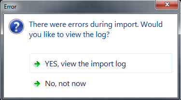

If you read the previous help item, Media And Your AGK Project,
you will have seen how easy it is to import stuff into giLE2D. However,
there are some constraints with automatic importing, the main one being
that you can only drag and drop image files whose dimensions (x-size and
y-size) are a power of 2!
Why is this, you may ask... and you may... but most game engines out
there are generally happier if image dimensions are a power of two...
its got something to do with the way the engines calculate stuff.
By ensuring the texture dimensions are a power of two, the graphics
pipeline can take advantage of optimizations related to efficiencies in
working with powers of two. For example, it can be (and absolutely was
several years back before we had dedicated GPUs and extremely clever
optimizing compilers) faster to divide and multiply by powers of two.
Working in powers of two also simplified operations within the pipeline,
such as computation and usage of mipmaps (a number that is a power of
two will always divide evenly in half, which means you don't have to
deal with scenarios where you must round your mipmap dimensions up or
down).
Whew! Don't worry though, if you're hell-bent on getting a weird size
image into giLE2D, there is a way, but first, with that
out of the way, lets see what happens with a non power of 2 image...
I piced an image with dimensions 1000 x 772 and dragged it onto
giLE2D. I got this message:

Then I clicked "YES, view the import log" and got this:
So, giLE2D will tell you when a fopah has occurred!
Anyway, remember I said that there is a to get a weird size image into
giLE2d... well... just open up Windows Explorer, select
the funky image, and copy it to your AGK projects media folder. Then,
click on the "Refresh Sprite List" button (see below). Your image will
now show up in the media/sprite list.
OK then, the next thing I should tell you about would be getting an
actual backdrop or background into your map, to set the scene as it
were. If you want to read about that now, then go ahead and
click here, else go back to the home screen!